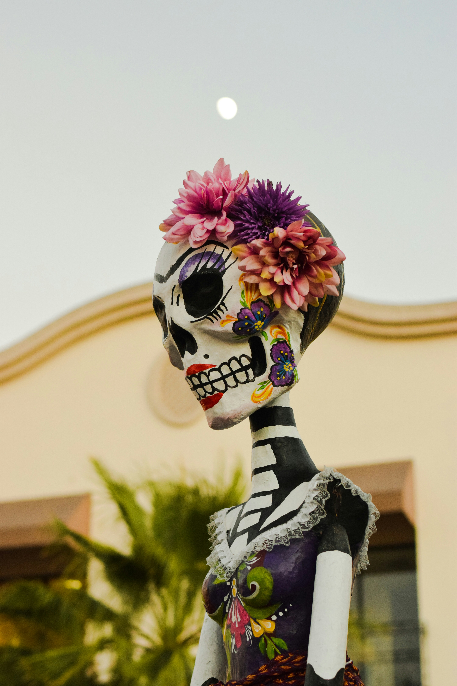
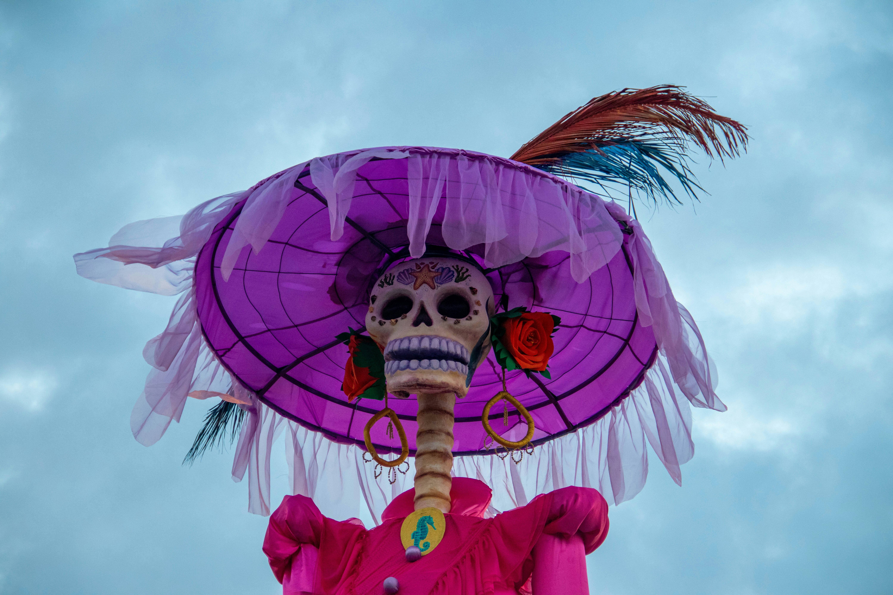
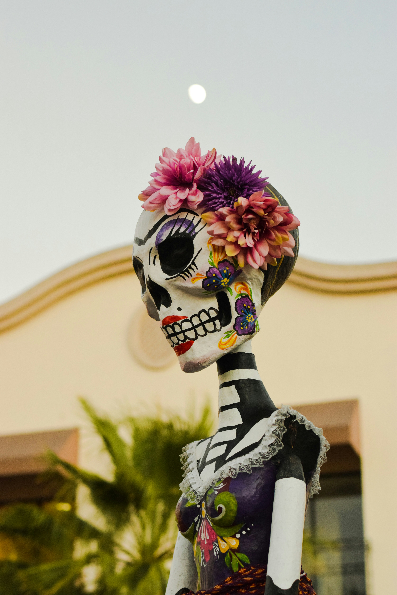
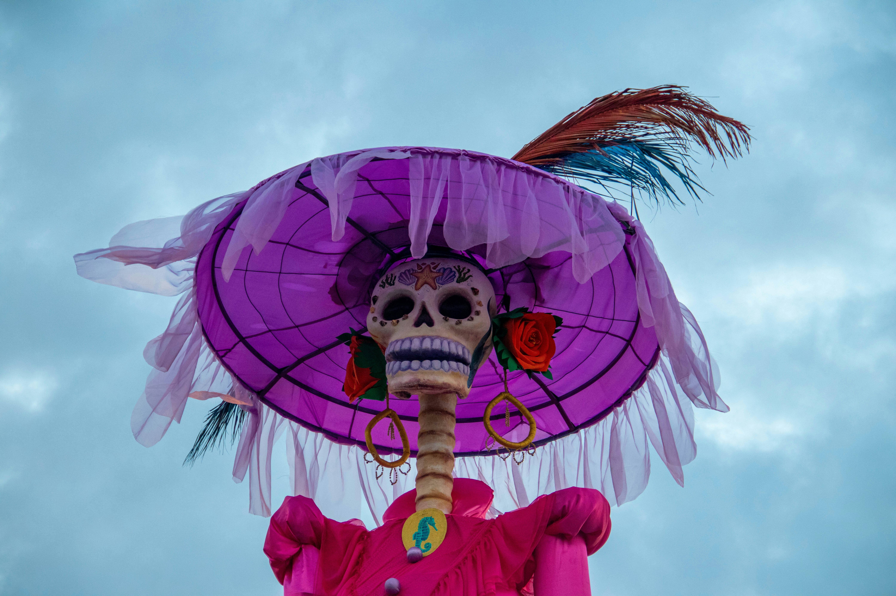

Acerca de
El Día de Muertos es una celebración mexicana que honra a los seres queridos que han fallecido. Durante esta festividad, se colocan ofrendas con flores, velas, comida y fotos para recordar y dar la bienvenida a los difuntos. Es una mezcla de tradiciones indígenas y católicas, llena de colores, símbolos y respeto, donde la muerte es vista como una parte natural de la vida, celebrada con alegría y cariño.
Historia
 



El Día de Muertos es una celebración mexicana de origen prehispánico que honra a los difuntos. Los pueblos indígenas, como los mexicas, mayas y purépechas, creían en la vida después de la muerte y realizaban rituales para recordar y guiar a sus seres queridos en su viaje al más allá. Con la llegada de los españoles en el siglo XVI, estas creencias se fusionaron con el Día de Todos los Santos y el Día de los Fieles Difuntos del catolicismo. Así surgió el Día de Muertos, que se celebra el 1 y 2 de noviembre, donde las familias construyen altares con ofrendas, como calaveras de azúcar, flores de cempasúchil y los alimentos favoritos de los difuntos, en un ambiente colorido y festivo que celebra la continuidad de la vida.
Elementos festivos
Cempaxúchitl

Terciopelo
Ofrenda

Pan de muerto